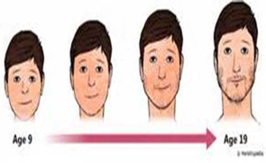

Facial Hair for Boys
When boys enter puberty, they start producing testosterone. Testosterone is responsible for many of the changes your body goes through. Getting hair on your face is one of the last changes of puberty. On average, boys start noticing hair on their face around age 15 or 16. Exactly when the changes of puberty occur can vary. How fast the changes occur can also vary.
